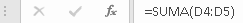
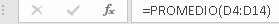
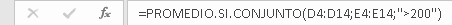
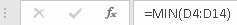
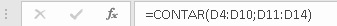
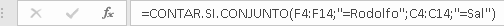
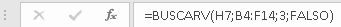
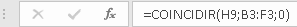

La función suma agrega valores. Puede sumar valores individuales, referencias o rangos de celda o una combinación de las tres
EJEMPLO
Se usa para analizar el rango de datos y encontrar el valor promedio
EJEMPLO
Se usa para analizar el rango de datos y encontrar el valor medio de todos los números en un rango de celdas, basándose en un criterio específico.
EJEMPLO
El valor mínimo de una lista de valores omitiendo los valores lógicos y el texto
EJEMPLO
Cuenta la cantidad de celdas que contienen números y cuenta los números dentro de la lista de argumentos
EJEMPLO
Contar los elementos de un rango que cumplen con los criterios definidos
EJEMPLO
Cuando necesite buscar en una sola fila o columna y encontrar un valor desde la misma posición en una segunda fila o columna
EJEMPLO
Devuelve un valor o la referencia a un valor desde una tabla o rango
EJEMPLO
Busca un elemento determinado en un intervalo de celdas y después devuelve la posición relativa de dicho elemento en el rango
EJEMPLO
